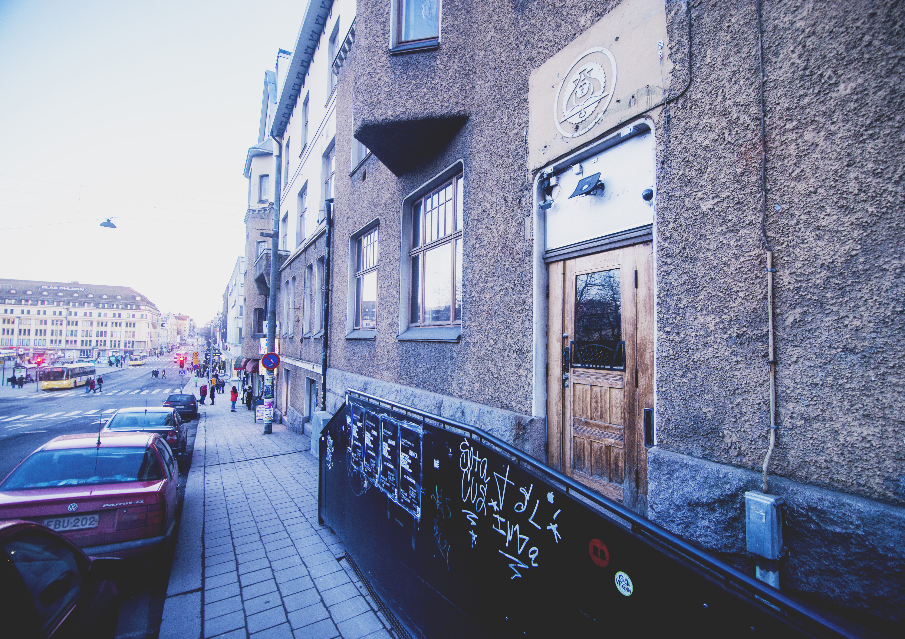
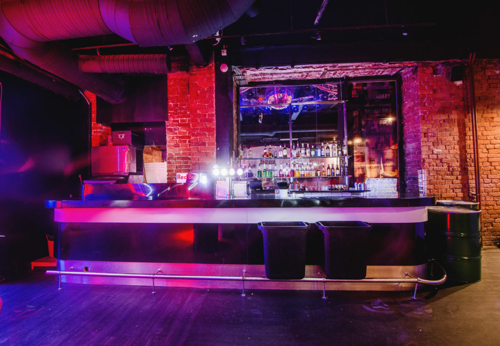
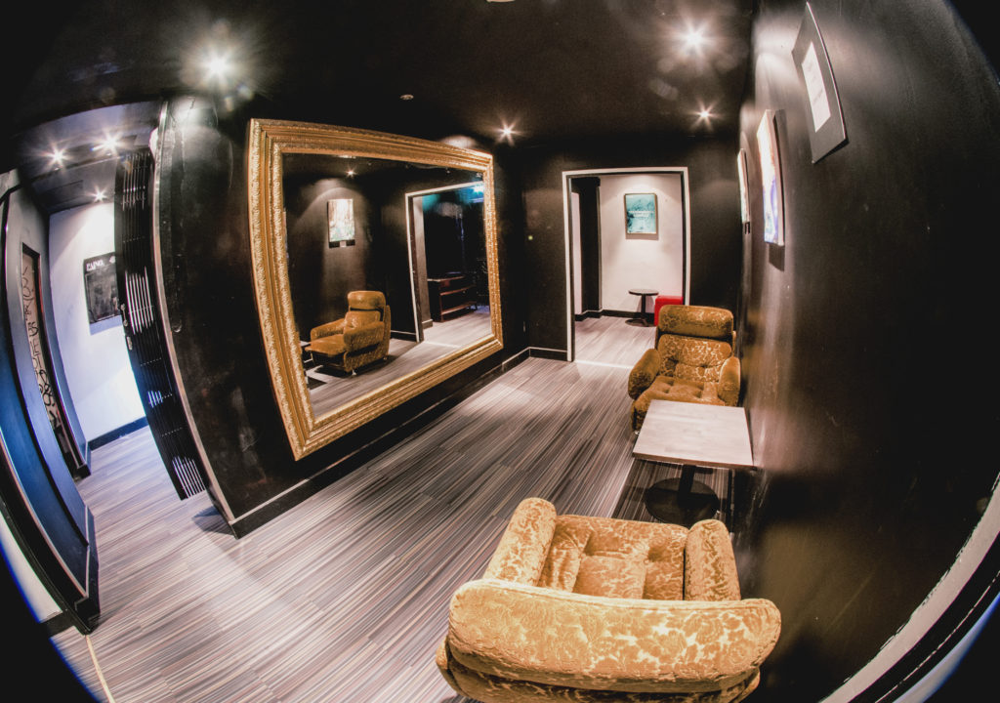
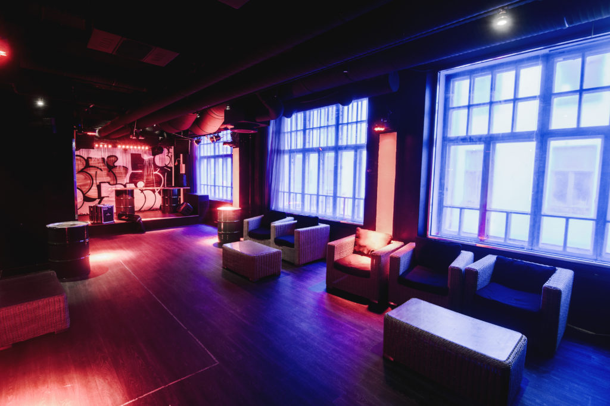

How a Little-Known Coastal City Is Putting Finland on the Techno Map
{kind=link}

It’s 2am on a crowded, sweaty dancefloor located in intimate proximity to Marcel Fengler, who’s throwing down a deep, driving, and percussive take on his Berghain-approved brand of techno. The dancefloor is locked in, and the atmosphere has been electric since the Berlin-based Fengler hit the decks just after midnight. Beyond the writhing mass of bodies, a dynamic collection of paintings, interactive art installations, and graffiti adorns the walls. This could be a scene straight from a basement in Amsterdam or Berlin, but it’s actually happening in a small Finnish town called Turku.
Finland is the quiet achiever of northern Europe dance culture, rivaling or exceeding the efforts of its Scandinavian cousins. While it might not match the hype or influence generated by the Swedes, it’s kept pace with its Norwegian cosmic disco compatriots, while shooting far ahead of the slow-burn scene cultivated in Denmark.
Those familiar with Finland, located across the sea from Sweden and sharing an eastern border with Russia, probably know about its capital Helsinki and its annual cultural highlights like Flow Festival, as well its vibrant cluster of clubs dotted around the city’s Narinkkatori Square. Finland’s real cultural capital, however, might be the unassuming city of Turku, located on the Baltic Sea in the southwest region of the country. Founded in the 13th century, Turku is Finland’s oldest city and former capital, and, despite having a population under 200,000, has been a definitive nexus for underground dance music since it hosted the country’s first raves in its empty warehouses during the 80s.
{kind=link}

Turku also has an edge over its capital in the scenic beauty department. The Aura River flows through the heart of the city, with a medieval cobbled street packed with bars and restaurants running alongside it. Saturday nights out often start at one of Finland’s oldest restaurants, Tårget, which includes the Piazza cocktail bar (order the world’s best gin and tonic) and plays groovy deep house inside the stunning high ceilinged, stone walled heritage interior.
From here, it’s just a brief stroll up the hill towards the city center, where you’ll find Paino., a former printing press that has become the face of Turku’s revitalized house and techno scene.
Paino. throws its seasonal closing party this weekend, before the revelry moves outdoors for the round-the-clock sun of the Nordic summer. The 12-hour party kicks off tomorrow (April 30) and runs through the early morning of May Day, a traditional Finnish celebration that happens annually on May 1. On this night, the party happens in the streets and in the city’s Market Square, with a lineup featuring the club’s local residents.
{kind=link}

So far this year, other weekends at Paino. have featured techno heavies Fengler and Joel Mull, alongside the deeper grooves of visitors including La Fleur and Funk D’void, along with the occasional evening of deep trance from Finnish veteran Orkidea.
Turku resident Artturi Elovirta has been around since the city’s early rave scene days and has balanced a career in graphic and sound design with roles in local music collectives, including his current position in the X-Rust Organization, a non-profit focused on keeping electronic music alive in Finland.
“It was during late 80s when the counter cultures really took off in Turku, when people started getting into DJing, urban art, graffiti, skating… but it was all intertwined,” he recalls. “We started going to the abandoned warehouses, where the hip-hop and rave scenes both started to develop. The jungle and drum n’ bass scenes were really bubbling by the early 90s.”
The scene peaked at the turn of the millennium with the success of the Koneisto Festival, which grew to 20,000 attendees to become the largest festival in Scandinavia at the time. Headliners included Richie Hawtin, Luke Slater and Miss Kittin, before the event relocated to Helsinki.
“Turku was definitely the main techno capital of Finland, and it will always have a special place in people’s hearts,” Elovirta continues. “It all started here; it was where all the crazies in early underground dance culture went. They didn’t give a shit, they just did their thing and really lived it.”
{kind=link}

Elovirta says that Paino. has gifted the city with a new home base for its freshly invigorated underground scene, which exists alongside more commercial hangouts like the Börs Night Club, a venue that ticks the EDM and big room boxes. Both of these genres helped get the energy in Turku pumping again after it began sagging at the end of the last decade.
“We’ve experienced a renaissance in house and techno the past few years,” says Elovirta. “Paino. has become the face of this. New producers, new faces and a new generation.”
Within the Finnish scene in general there’s less of the divisiveness often found across different dancefloor subcultures, with the commercial parties happily coexisting with the more underground affairs, and the city’s promoters often involved in both.
“You see the commercial scenes swelling around all the young kids who live in Turku because of the different universities,” says local promoter Heikki Kyllönen. “But personally I think this is a good thing; it helps drive the overall energy. We’re supporting each other instead of competing with each other, it’s more like we’re pulling the same rope.”
Paino. has undergone a few key refurbishments this year, with a new ‘Babylon’ live room catering to live performances from the underground hip-hop scene, which has shared a heritage with the city’s electronic contingent since they began alongside each other three decades ago. In the last year, the club has also pumped up its lighting, sound, and art, although the music has always come first.
“Some of the changes related to renovating and getting some more visible art on the walls didn’t come as quickly as we hoped,” Paino. promoter Ukko-Pekka Itäpelto says. “There were points where we had to invest in lineups at the expense of fancy sofas.”
Even in a place with so much history, Itäpelto says running an underground club in a city with a relatively small population is a challenging gig, especially because innovative interiors and international DJ bookings make for expensive overheads. For the moment, however, Turku remains dance music’s undiscovered northern European secret.
Angus Paterson is a writer in Berlin. He is on Twitter. All photos courtesy of Paino.